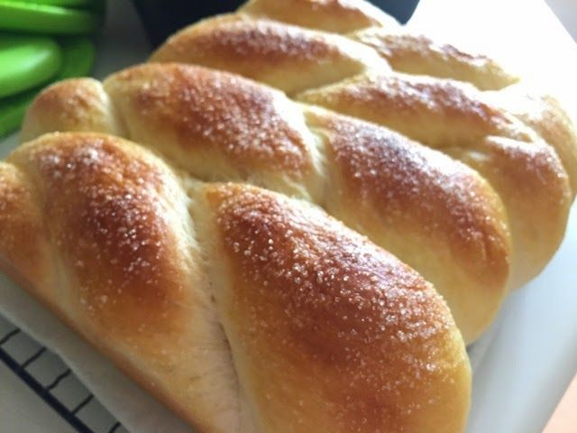

Twisted Bread of Milk and Sugar

Twisted Bread is a dish from 16th century Italy that is very good for sandwiches and snacks.
Ingredients:
- 2 tsp yeast
- 1/2 cup warm water (110°F)
- 3 1/3 cups all purpose flour, sifted
- 1/2 cup sugar
- 1/2 cup milk
- 3 Tbsp Rosewater
- 1 Tbsp butter
- 3 egg yolks
Preparation:
- Mix yeast and warm water, and let sit so that the yeast can react. The yeast should begin to foam.
- Mix dry ingredients together.
- In a small saucepan, heat milk, rosewater, butter, and egg yolks. Be careful not to let the eggs cook and become solid.
- Mix yeast/water with dry ingredients. When thoroughly incorporated, mix in milk/egg mixture until a dough is formed.
- Knead dough, then cover, and let rise about an hour, or until the dough has doubled in size.
- Punch down the dough and form into the desired shape (one or two braided loaves, rolls, etc.). Again, cover and let double in size.
- Bake bread at 350°F for about 20 minutes (If making rolls, you may need to adjust the time).